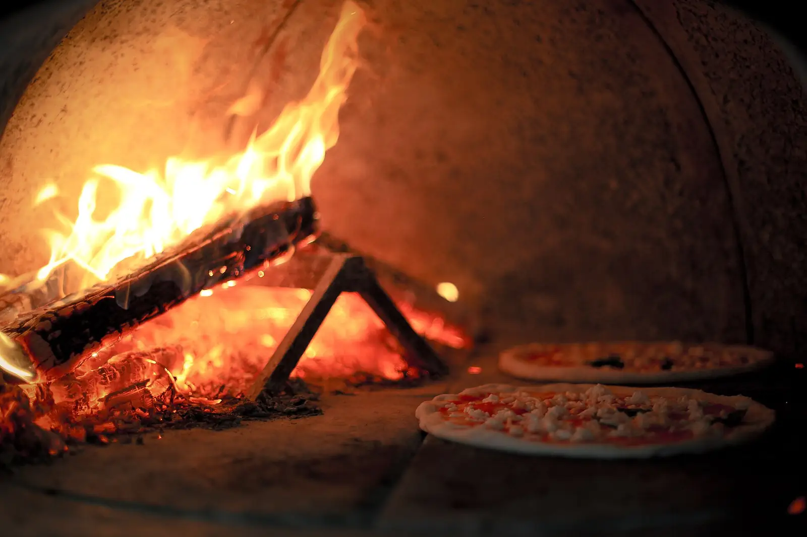
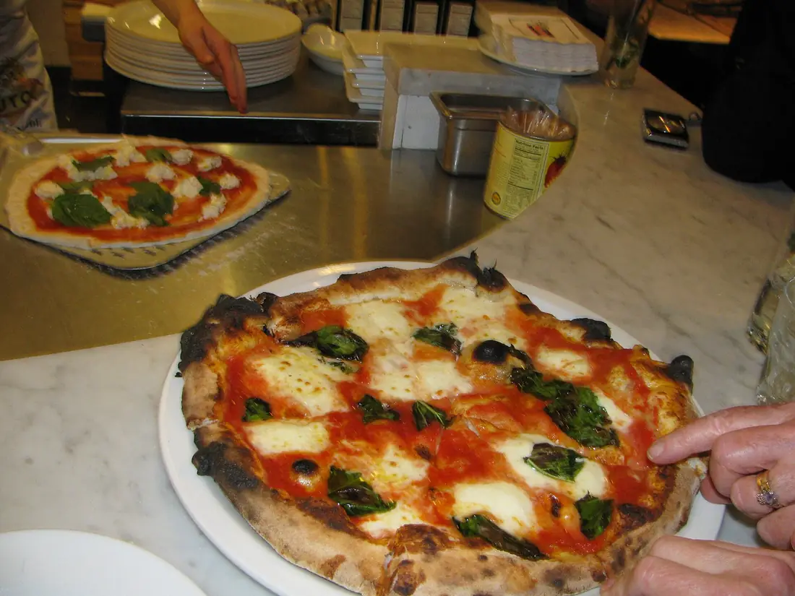
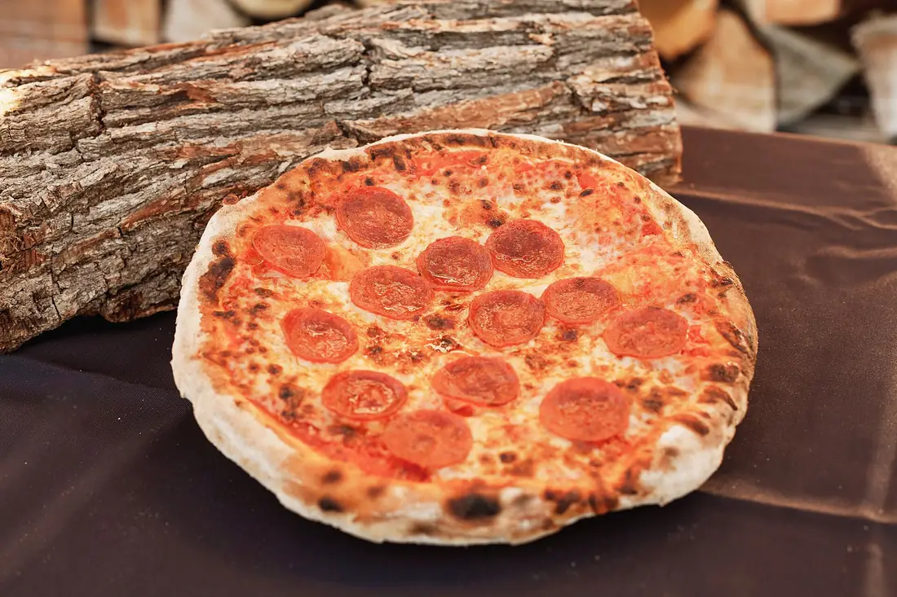
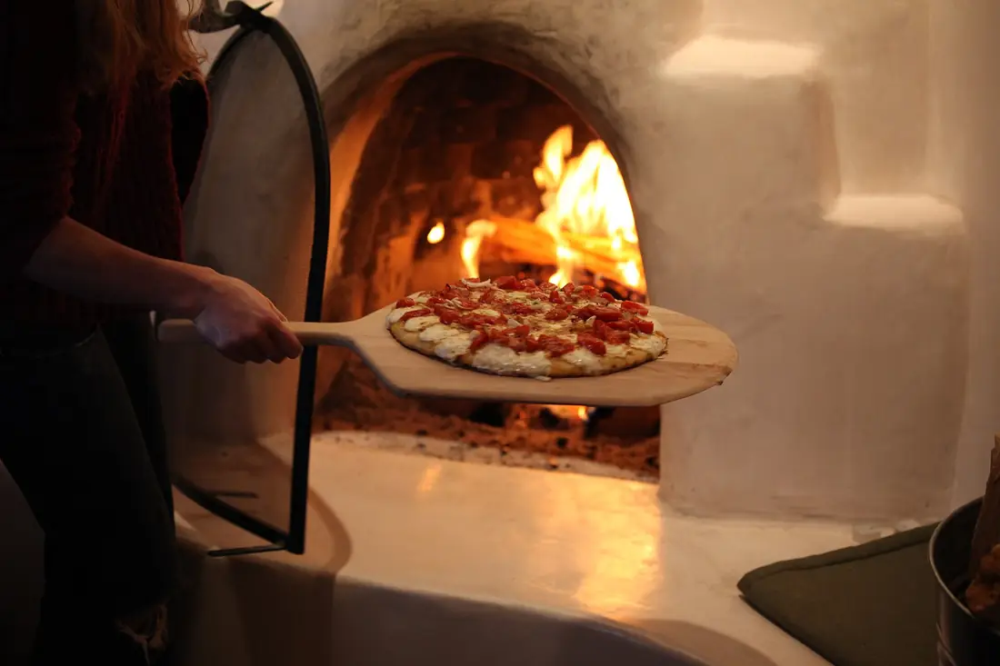
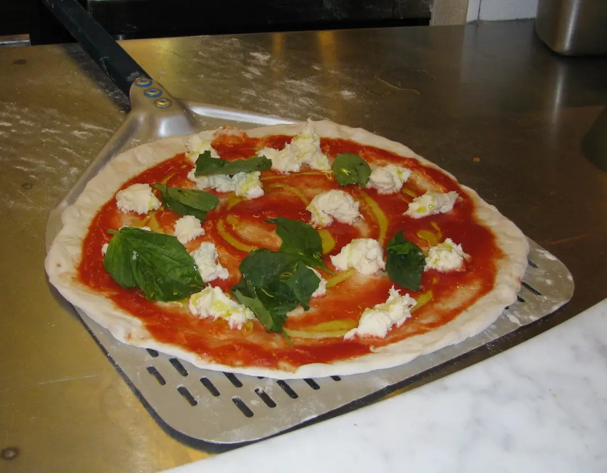

Quarta a domingo (domingo abre às 17h)
Foto: Basheer Tome, CC BY 2.0, Wikimedia CommonsFogo de lenha. Massa de 48 horas.
Pizza assada em 90 segundos a 420 °C, no bairro Batel, em Curitiba. Peça pelo celular em dois minutos.
48 hde fermentação
420 °Cno piso do forno
90 spor pizza
Mais pedidas
Três para começar

MargueritaMussarela de búfala, manjericão e azeite.a partir de R$ 44

PepperoniCom um fio de mel picante.a partir de R$ 50

Calabresa da casaCalabresa fatiada fina e cebola roxa.a partir de R$ 42
Foto: Stevemconst61, dom. público, Wikimedia Commons · Foto: oakwoodfirepizza.com, CC BY-SA 4.0, Wikimedia Commons · Foto: Jared Tarbell, CC BY 2.0, Wikimedia Commons

Nossa massa
Dois dias de espera para 90 segundos de forno.
Farinha, água, sal e fermento. Nada de aditivo. A fermentação longa dá sabor e deixa a borda leve.
Como pedir
Sem aplicativo, sem cadastro
Escolha
Sabor, tamanho e borda. Meio a meio sem custo extra de montagem.
Revise
O pedido soma o total e a taxa do seu bairro antes de qualquer envio.
Mande
A mensagem sai pronta para o WhatsApp. É só tocar em enviar.